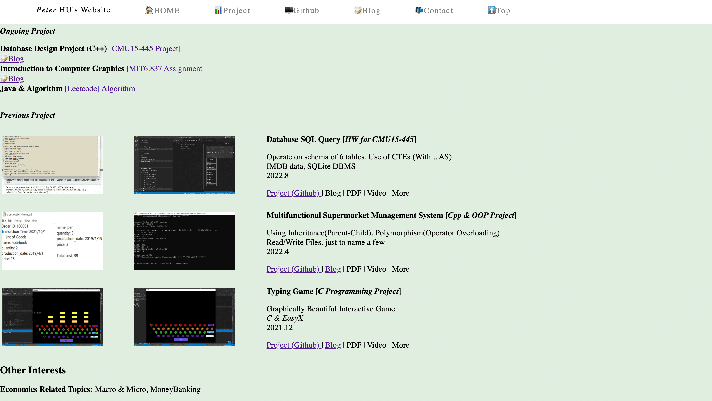
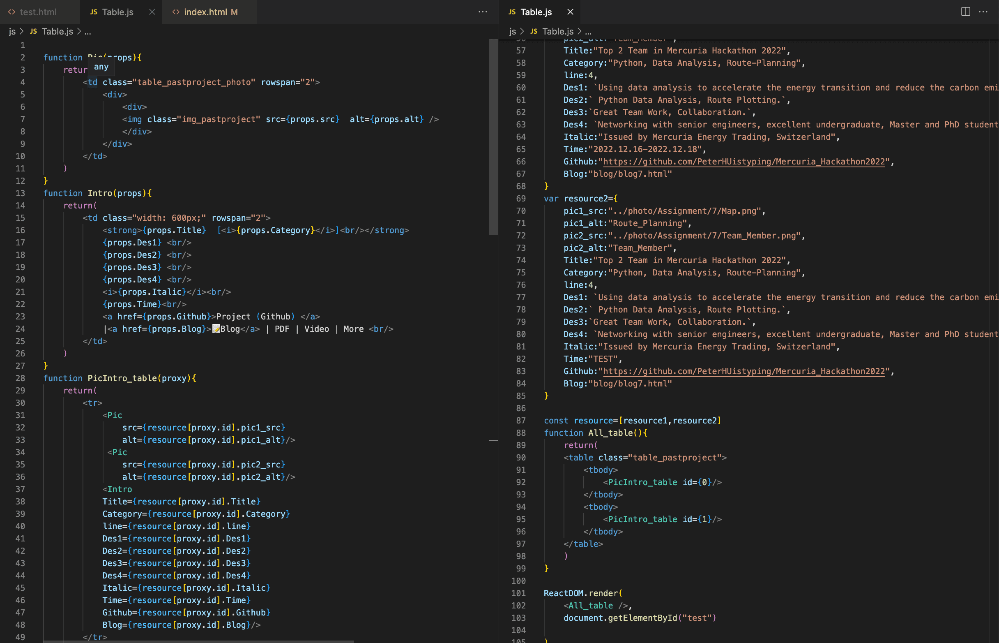
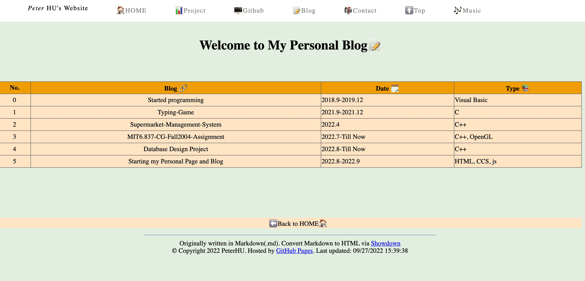
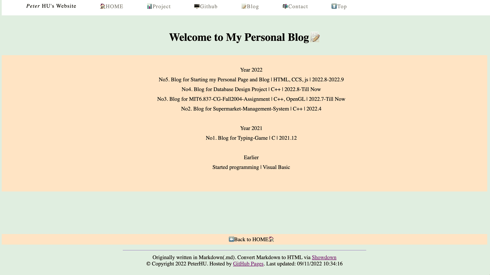

Starting my Personal Page and Blog (with Update Details)
HTML, CCS, js, React
Personal Page
Powered by Github Page
Main idea: Using table to sort things up
Better display on mobile device.
CSS ~ Change style directly
Reuse:Only need to change here once instead of multiple times
Directory: Using class Top ul li a
Setting utf-8 to display emoji

Code Reconstruction
Using React together with React to construct functions, thus shortening the lines of code and maintenance cost. -2023.2.1
Reconstructing the whole web structure using React App. -2023.2.15
Adding a 404 redirect to home page. -2023.2.16

Blog
Updated Blog2.0: ⬇ Sort Data on Header Click
Using JavaScript to support table display and sorting -2022.9.27
Updated Music for Blog: Using < frame> and iframe to support Music autoplay and looping -2022.9.18

Originally written in Markdown(.md).
Convert Markdown to HTML via Showdown
Reuse: the same part in the HTML / using JavaScript to encapsulate the header and footer

Welcome to My Personal Page